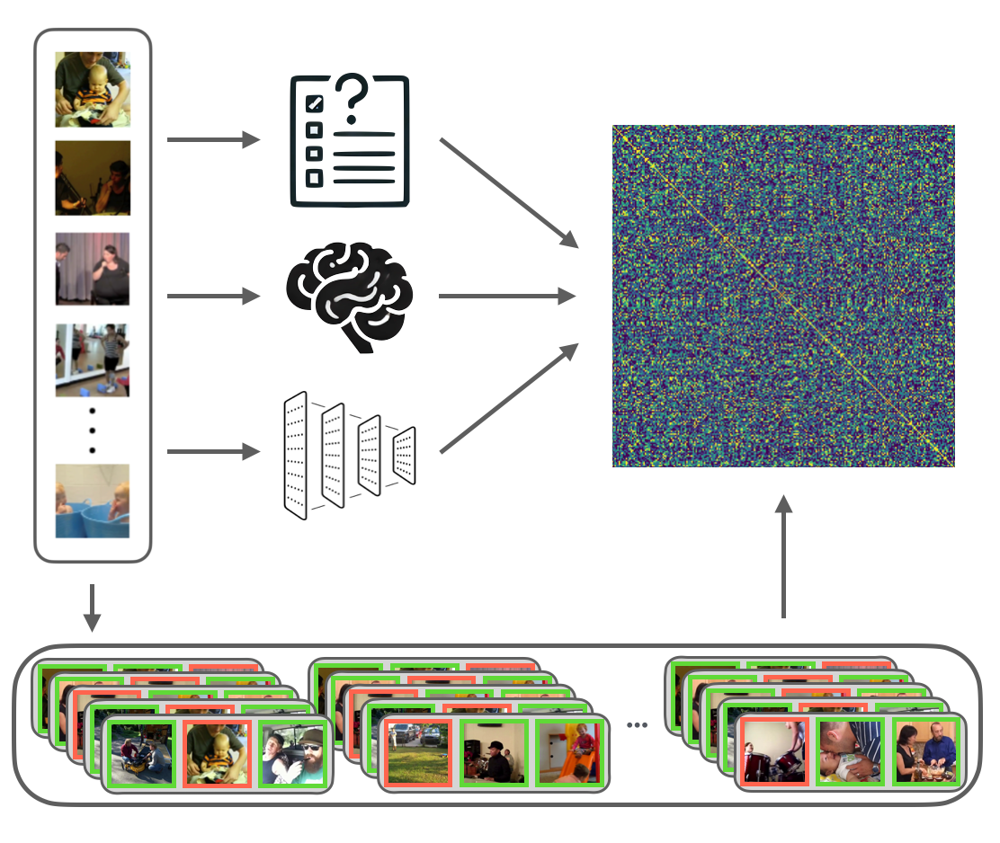
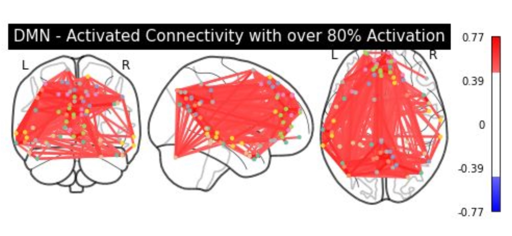

Kathy Garcia
NSF Fellow (12%) • Published ICLR (25%) • Best Oral ICML LatinX • 2x VSS Talks (15%) • CCN Talk (25%) • 350+ models benchmarked • WSJ, PopSci Features
Building human-aligned AI through computational cognitive neuroscience.
I am a 4th year Ph.D. student in Computational Cognitive Science at Johns Hopkins University, where I investigate how humans and machines understand social interactions in the Computational Cognitive Neuroscience Lab with Professor Leyla Isik.
I am fortunate enough to have had my research published at top-tier venues including at ICLR and featured in
The Wall Street Journal. I develop computational models that bridge human vision and
artificial intelligence, with a focus on creating socially intelligent systems that understand dynamic
human behavior.
Previously, I earned my B.S. at Stanford University and completed an NIH Postbac Fellowship in affective neuroscience at Northwestern University, mentored by Professor Robin Nusslock, Dr. Zachary Anderson, and Dr. Cassandra VanDunk.
🎓 Mentorship – First-gen Latina | Happy to chat about research, grad school, or careers!
News
[Feb 2025]
🎤 Talk accepted at VSS 2025 on social scene perception!
[Jan 2025]
🎉 Paper accepted at ICLR 2025 on dynamic social vision!
[Aug 2024]
🎤 Delivered a talk at CCN 2024 on deep learning vs. human vision!
[May 2024]
🎤 Delivered a talk at VSS 2024 on neural benchmarking!
[Apr 2024]
🎤 Gave brown bag talk at JHU Cognitive Science on DNN benchmarking!
[Apr 2024]
🎓 Awarded the prestigious NSF GRFP!
[Sept 2021]
🎓 Awarded the Kelly Miller Fellowship at Johns Hopkins University!
Research
Building the next generation of socially intelligent AI systems. I bridge human cognition and artificial intelligence by developing computational models that understand social interactions the way humans do. My research agenda focuses on closing the gap between human social perception and AI capabilities through neural benchmarking, multimodal learning, and cognitively-inspired architectures.
Working with researchers across MIT, Stanford, and Johns Hopkins, I develop methods that enable AI systems to perceive, interpret, and predict complex social dynamics. This work spans computer vision, natural language processing, and cognitive neuroscience — positioning AI systems to become truly collaborative partners in human social environments.
🧠⚡🤖
💫⚙️🔮


|
Research Projects
|
Look, Then Speak: Social Tokens for Grounding LLMs in Visual Interactions
Kathy Garcia,
Vighnesh Subramaniam,
Boris Katz,
Brian Cheung
Accepted at UniReps Workshop, NeurIPS 2025
Paper
Discussion
We introduce social tokens: visual features extracted from video frames & strategically inserted into language models to enhance their comprehension of social interactions. This method significantly improves LLM performance on social tasks by enabling richer integration of social cues. Our results demonstrate that social tokens help bridge the gap between human and model understanding of complex social dynamics.
|

Preprint
Aligning Video Models with Human Social Judgments via Behavior-Guided Fine-Tuning
Kathy Garcia,
Leyla Isik
arXiv preprint, 2025
We introduce behavior-guided fine-tuning to align video models with human social perception. Using 49,000+ human similarity judgments, we fine-tune video models via a hybrid triplet-RSA loss, significantly improving alignment with how humans perceive social interactions while maintaining performance on downstream tasks.
|
|

A Large-Scale Study of Social Scene Judgments: Alignment with Deep Neural Networks and Social-Affective Features
Kathy Garcia,
Leyla Isik
Vision Sciences Society (VSS), 2025 (Talk Presentation)
🎤 VSS 2025 Talk (15% acceptance)
We benchmark how closely deep neural networks capture the social understanding reflected in human judgments and brain responses to real-world interactions.
Our dataset and framework reveal that while AI models are closing the gap, humans still rely on uniquely social cues to interpret complex social scenes.
|
Modeling Dynamic Social Vision Highlights Gaps Between Deep Learning and Humans
Kathy Garcia,
Emalie McMahon,
Colin Conwell,
Michael F. Bonner,
Leyla Isik
International Conference on Learning Representations (ICLR), 2025
🏆 Best Oral @ ICML LatinX 2024 • 📰 WSJ, JHU Hub, PopSci, Marketplace
We present a dataset of natural videos and captions involving complex multi-agent interactions, and we benchmark 350+ image, video,
and language models on behavioral and neural responses to the videos. Together these results identify a major gap in AI's ability
to match the human brain and behavior and highlight the importance of studying vision in dynamic, natural contexts.
|
Large-scale Deep Neural Network Benchmarking in Dynamic Social Vision
Kathy Garcia,
Colin Conwell,
Emalie McMahon,
Michael F. Bonner,
Leyla Isik
Vision Sciences Society (VSS), 2024 • Cognitive Computational Neuroscience (CCN), 2024
🎤 VSS 2024 Talk (15% acceptance) • CCN 2024 Contributed Talk (25% acceptance)
Large-scale benchmarking of 300+ DNNs with diverse architectures, objectives, and training sets, against fMRI responses to a curated dataset of 200 naturalistic social videos, with a focus on the "lateral" visual stream.
|
|

Predicting Dimensional Symptoms of Psychopathology from Task-Based fMRI using Support Vector Regression
Kathy Garcia,
Zach Anderson,
Iris Ka-Yi Chat,
Katherine S.F. Damme,
Katherine Young,
Susan Y. Bookheimer,
Richard Zinbarg,
Michelle Craske,
Robin Nusslock
SfN Global Connectome, 2021 (Virtual poster presentation)
This study develops a novel machine learning approach using Support Vector Regression (SVR) to explore potential biomarkers in fMRI data for symptoms of anxiety and depression,
finding that MID task-fMRI data does not accurately predict these symptoms, with results indicating a poor model fit.
|
Publications
Garcia, K., Subramaniam, V., Katz, B., & Cheung, B. (2025). Look, Then Speak: Social Tokens for Grounding LLMs in Visual Interactions. In NeurIPS 2025 Workshop on Unifying Representations in Neural Models (UniReps).
PDF
BibTeX
Garcia, K., & Isik, L. (2025). Aligning Video Models with Human Social Judgments via Behavior-Guided Fine-Tuning. arXiv preprint arXiv:2510.01502.
PDF
Garcia, K., & Isik, L. (2025). Semantic and Social Features Drive Human Grouping of Dynamic, Visual Events in Large-Scale Similarity Judgements. Journal of Vision, 25(9), 2621.
DOI
Garcia, K., McMahon, E., Conwell, C., Bonner, M. F., & Isik, L. (2025). Modeling Dynamic Social Vision Highlights Gaps Between Deep Learning and Humans. In International Conference on Learning Representations (ICLR).
PDF
BibTeX
Garcia, K., Conwell, C., McMahon, E., Bonner, M. F., & Isik, L. (2024). Large-scale Deep Neural Network Benchmarking in Dynamic Social Vision. Journal of Vision, 24(10), 716.
DOI
McMahon, E., Conwell, C., Garcia, K., Bonner, M. F., & Isik, L. (2024). Language model prediction of visual cortex responses to dynamic social scenes. Journal of Vision, 24(10), 904.
DOI
Garcia, K., McMahon, E., Conwell, C., Bonner, M. F., & Isik, L. (2024). Dynamic, social vision highlights gaps between deep learning and human behavior and neural responses. Cognitive Computational Neuroscience (CCN).
PDF
|
|
I have been fortunate to have some of my research work covered by popular media:
|
Selected Honors
Best Oral Presentation Award, LatinX in AI Workshop, ICML (2024)
Sigma Xi Scientific Research Honor Society (2025)
National Eye Institute Early Career Scientist Travel Grant (2025)
John I. Yellott Travel Award for Vision Science, VSS (2025)
FoVea Travel and Networking Award (2024)
Kelly Miller Fellowship, Johns Hopkins University (2021-2025)
Northwestern University Interdepartmental Neuroscience Research Fellowship (2020)
Stanford University El Centro Latino Acknowledgement (2017)
|
Miscellaneous
|
Teaching Assistant, Cognitive Neuropsychology of Visual Perception - Spring 2024
Teaching Assistant, Neuroimaging Methods in High-Level Vision - Fall 2023
Teaching Assistant, Computational Cognitive Neuroscience of Vision - Spring 2023
|
|